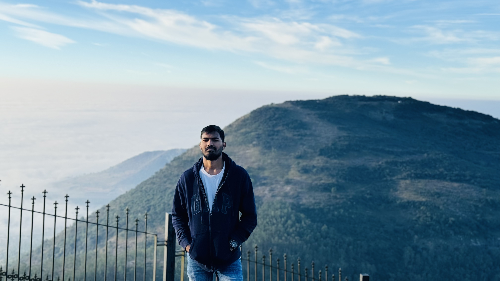

As a Research Technician at the University of Nebraska–Lincoln, I support precision agriculture through lab work, field operations, data analysis, and UAV applications. I hold a Master’s in Information Technology Management and a B.Sc. in Agriculture, and I am passionate about integrating agriculture and technology to drive sustainable, data-driven farming solutions.
Conduct field and lab research in robotics and precision agriculture. Deploy drones and autonomous machines for data-driven crop insights.
Assisted in field trials, crop monitoring, and sustainable agri-input development.
Monitored pests, implemented irrigation systems, and collected data for research trials.
Led agricultural outreach, farmer engagement, and product distribution across rural India.
During my RAWE program, I gained hands-on experience working with farmers on crop cultivation, pest management, soil and irrigation practices, and field data collection, strengthening my understanding of sustainable agriculture and rural development.
Developed sustainable cover crop destruction using UV-C, thermal, and electric systems without herbicides.
Designed drone-based pesticide sprayers using GPS for targeted, efficient field treatment.
📧 rjetti2@unl.edu
📞 +1 (959) 282-9771